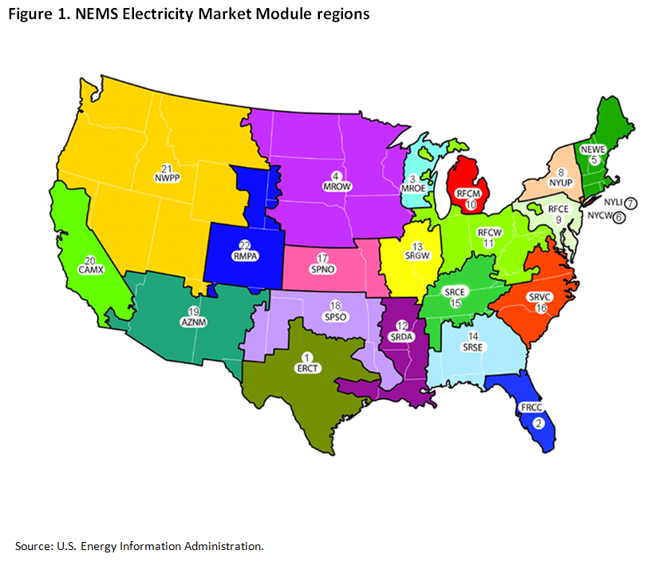

Analysis & Projections
Baseline and scenario data
Reference & Base Policy
Reference & Selected Policy Cases (AEO Reference, Base Policy, Policy Extension, Policy with New Nuclear)
High Economic Growth
High Oil and Gas Resource
Note: links bring up all output tables; electric sector-specific material can be found using the browser menu under Publications & Tables.
Analysis of the Impacts of the Clean Power Plan
Release date: May 22, 2015
revision
Background, Methodology, and Scenarios
This report responds to an August 2014 request to the U.S. Energy Information Administration (EIA) from Representative Lamar Smith, Chairman of the U.S. House of Representatives Committee on Science, Space, and Technology, for an analysis of the Environmental Protection Agency's (EPA) proposed Clean Power Plan under which states would be required to develop plans to reduce carbon dioxide (CO2) emissions rates from existing fossil-fired electricity generating units.1 Appendix A provides a copy of the request letter.
The starting point for EIA’s analysis of the Clean Power Plan is the Annual Energy Outlook 2015 (AEO2015) Reference case rather than earlier AEO projections that were developed using versions of EIA's National Energy Modeling System (NEMS) that lack the model structure needed to analyze key features of the Clean Power Plan proposal. With EIA's decision, unrelated to this project, to publish shorter and longer editions of the AEO in alternating years, AEO2015 does not include all of the alternative cases presented in earlier AEO editions. However, in the spirit of Chairman Smith’s request, this report analyzes the Clean Power Plan in the context of the AEO2015 High Economic Growth and High Oil and Gas Resource cases as well as the Reference case in order to examine indicators of the proposed rule’s impacts on energy markets under varying assumptions regarding economic growth, electricity demand, and fuel prices.
To address some of the additional questions raised in Chairman Smith's request, the report includes additional Clean Power Plan sensitivity cases including: 1) extension of the Clean Power Plan targets beyond 2030 to reduce CO2 emissions from electric power generation by 45% relative to the 2005 level by 2040; 2) treatment of future nuclear capacity similar to the treatment of renewable capacity; 3) sensitivities for expenditures and effectiveness of energy efficiency programs; 4) sensitivities for the cost and effectiveness of heat rate improvement measures; 5) no availability of markets for CO2 captured from electric power plants for enhanced oil recovery (EOR); 6) an alternative compliance phase-in trajectory during the 2020-29 period; 7) alternative accounting rules for emissions from biomass generation; 8) national compliance cooperation; and 9) limited interregional trade.
Description of the proposed Clean Power Plan
Rulemaking history and status
In June 2014, EPA issued its proposed Clean Power Plan to regulate CO2 emissions from existing power plants under section 111(d) of the Clean Air Act.2 The Clean Power Plan proposes to limit carbon emissions from existing fossil fuel-fired electric generating units, including steam generating, integrated gasification combined cycle, or stationary combustion turbines (in either simple cycle or combined cycle configuration) operating or under construction by January 8, 2014.3
In addition to the text of the proposed rule, EPA issued a Regulatory Impact Analysis for the Clean Power Plan,4 along with numerous technical supporting documents and fact sheets.5 In October 2014, EPA issued a notice of data availability, which provided discussion and solicited additional comment on several topic areas, including the 2020-29 compliance trajectories.6 Also in October 2014, EPA issued a supplemental proposal to address carbon pollution from affected power plants in Indian Country and U.S. territories.7 In November 2014, EPA issued an additional technical support document providing examples of how a state could translate its rate-based goal into an equivalent mass-based goal, expressed in metric tons of CO2.8 In November 2014, EPA also issued a memo addressing biogenic CO2 emissions from stationary sources that explicitly relates this topic to the implementation of the Clean Power Plan.9
EPA's proposed Best System of Emissions Reduction and state-level CO2 emission performance goals
In the proposed Clean Power Plan, EPA calculates the emissions reduction targets for individual states through application of a Best System of Emissions Reduction (BSER). The BSER consists of four building blocks which represent approaches to reducing CO2 emissions rates from existing fossil fuel-fired generators as calculated for purposes of compliance:
Building block 1: Improving the thermal efficiency of individual affected sources (heat rate improvement)10
Building Block 2: Dispatching the generating fleet to substitute less-carbon-intensive affected sources for more-carbon-intensive affected sources (re-dispatch for reduced emissions)
Building Block 3: Expanding the use of low- or zero-carbon generation in order to displace affected sources (low- and zero-carbon capacity expansion)
Building Block 4: Employing the use of demand-side energy efficiency to reduce overall generation required from affected sources (demand-side energy efficiency)11
In determining state goals, EPA begins by calculating an affected fossil generation emissions rate, in pounds of CO2 emissions per megawatt hour of electricity generated, based on 2012 historical data for each state. EPA then applies the building blocks of the BSER to arrive at each state’s interim and final emission rate performance goals. The Clean Power Plan proposes that states begin to reduce CO2 emissions from affected electric generating units by 2020 in order to reach final CO2 emission performance goals, measured in pounds of CO2 emitted per megawatthour of electricity generated from affected electric generating units, by 2030. The Clean Power Plan also proposes that states meet interim CO2 emission performance goals, on average, over the 10-year compliance period from 2020-29.12 The state-level emissions rates as calculated by EPA for 2012, as well as the interim targets for 2020-29 and the final targets for 2030 and beyond, specified in the proposed Clean Power Plan are provided in Appendix C, Table 25.
It is critical to recognize that while the BSER building blocks are used to establish state-level goals, each state has discretion in designing implementation plans to achieve outcomes that meet the goals. Two or more states may also cooperate to meet their combined goals jointly.
The state-level emissions performance goals under the proposed Clean Power Plan are not based on a simple emission rate calculation (emissions divided by generation) for generation provided by existing fossil-fired electric generating units. Rather, the goals are established and compliance is assessed using a formula that provides varying treatment of specific generation sources and demand-side efficiency programs that can displace CO2 emissions from existing generating units that are regulated under the Clean Power Plan proposal. For example, unlimited amounts of new and existing zero-emission non-hydropower renewable generation are included in the generation base used to calculate compliance, which makes the non-hydropower renewable generation more valuable for compliance than existing hydropower and new and existing nuclear generation that do not receive similar treatment. The proposed Clean Power Plan formula also considers efficiency programs that reduce load as equivalent to zero-emission generation that counts in the base for the compliance calculation, even though some of the generation that is avoided by reduced load may have already been served by zero-emission generation sources.
Methodology
The National Energy Modeling System
This report considers the proposed Clean Power Plan as modeled using EIA's National Energy Modeling System (NEMS). NEMS is a modular economic modeling system used by EIA to develop long-term projections of the U.S. energy sector, currently through the year 2040.13
The level of regional disaggregation in NEMS varies across sectors. For example, Lower 48 states electricity markets are represented using 22 regions, coal production is represented by 14 regions, and oil and natural gas production is represented in 9 regions. In many but not all cases, regional boundaries follow state borders. To the extent possible, this analysis represents the Clean Power Plan using regional targets derived from the state-level targets in the EPA proposal.
The Reference case projections developed in NEMS and published in the Annual Energy Outlook 2015 generally reflect federal laws and regulations and state renewable portfolio standards (RPS) in effect at the time of the projection. The Reference case does not assume the extension of laws with sunset provisions. In keeping with the requirement that EIA remain policy-neutral, the Reference case does not include proposed regulations such as the Clean Power Plan.
For this report, EIA constructed cases in NEMS that represent compliance with the proposed Clean Power Plan, including:
- EPA's proposed carbon intensity targets during the interim and final compliance periods, enforced at the NEMS Electricity Market Module (EMM) region level
- Choice of heat rate improvements (HRI) based on the representation of the cost and degree of potential HRI incorporated in the current (AEO2015) version of NEMS14
- Re-dispatch of affected electric generating units as an available compliance strategy
- Credit in compliance calculations for generation from existing and new renewable capacity15
- Credit in compliance calculations for currently under-construction nuclear capacity and 6% of generation from existing nuclear capacity
- Expansion of new low- and zero-carbon-emitting generating capacity, including representation of state renewable portfolio standards (RPS)16
- Credit in compliance calculations for avoided generation as a result of incremental demand-side energy efficiency savings achieved through energy efficiency measures in the residential and commercial sectors 17
- A phased-in 2020-29 compliance trajectory, to reflect that the proposed rule allows states flexibility to determine their pre-2030 trajectory, if they meet interim targets on a 10-year average or cumulative basis
By explicitly modeling the intensity targets, NEMS does not require or assume specific levels for individual compliance strategies. The discussion of EIA's analysis presents results in terms of the compliance options used to meet the regionalized Clean Power Plan targets.
Regional groupings
As noted above, NEMS is not a state-level model. The Electricity Market Module (EMM) builds and dispatches electric generating capacity in twenty-two distinct geographic regions, as shown in Figure 1 and described in Table 1.18
{kind=link}
| Number | Abbreviation | NERC sub region name | Geographic name* |
|---|---|---|---|
| 1 | ERCT | Texas Regional Entity | Texas |
| 2 | FRCC | Florida Reliability Coordinating Council | Florida |
| 3 | MROE | Midwest Reliability Council – East | Eastern Wisconsin |
| 4 | MROW | Midwest Reliability Council – West | Northern Plains |
| 5 | NEWE | Northeast Power Coordinating Council/ Northeast | New England |
| 6 | NYCW | Northeast Power Coordinating Council/ New York City-Westchester | New York City |
| 7 | NYLI | Northeast Power Coordinating Council/ Long Island | Long Island |
| 8 | NYUP | Northeast Power Coordinating Council/ Upstate New York | Upstate New York |
| 9 | RFCE | ReliabilityFirst Corporation – East | Mid-Atlantic |
| 10 | RFCM | ReliabilityFirst Corporation – Michigan | Lower Michigan |
| 11 | RFCW | ReliabilityFirst Corporation – West | Great Lakes |
| 12 | SRDA | SERC Reliability Corporation (SERC)- Delta | Mississippi Delta |
| 13 | SRGW | SERC – Gateway | Mississippi Basin |
| 14 | SRSE | SERC – Southeast | Southeast |
| 15 | SRCE | SERC – Central | Tennessee Valley |
| 16 | SRVC | SERC – Virginia-Carolina | Virginia-Carolina |
| 17 | SPNO | Southwest Power Pool North | Central Plains |
| 18 | SPSO | Southwest Power Pool South | Southern Plains |
| 19 | AZNM | Western Electricity Coordinating Council (WECC) – Arizona New Mexico | Southwest |
| 20 | CAMX | WECC – California | California |
| 21 | NWPP | WECC – Northwest Power Pool Area | Northwest |
| 22 | RMPA | WECC – Rocky Mountain | Rocky Mountain |
* Names are intended to be approximately descriptive of location. Exact regional boundaries do not necessarily correspond to state borders or to other regional naming conventions. | |||
For modeling purposes, EIA treats EMM regions as Clean Power Plan compliance regions in the bulk of this analysis. The model assigns each EMM region an emission performance goal in each compliance year from 2020-29, and holds the final goal constant from 2030 onwards. The modeled EMM regional goals, provided in Appendix D, Table 25, are consistent with EPA's proposed state-level goals.19
End-use sector models within NEMS, including the Residential Demand Module and the Commercial Demand Module, are Census region-based rather than state-level models. For this analysis, the end-use sector models determine results of incremental demand-side energy efficiency activities by U.S. Census division (Figure 2) and then map the savings to Electricity Market Module regions.

Caveats regarding interpretation of this analysis
Consistent with EIA’s statutory mission and expertise, this analysis focuses on the implications for the energy system and the economy of reducing CO2 emissions under the proposed Clean Power Plan. It does not consider any potential health or environmental benefits from reducing CO2 emissions from existing electric generating units covered by the proposed Clean Power Plan. It is not a cost-benefit analysis.
Additionally, this analysis represents other laws and regulations as modeled in NEMS. The Reference case used as the starting point for this analysis is the Annual Energy Outlook 2015 (AEO2015) Reference case, which generally reflects laws and regulations in effect as of October 2014.
EIA recognizes that projections over a 25-year horizon are inherently uncertain and subject to changing policy objectives, supply disruptions, the emergence of disruptive technologies, and other future developments. It is not possible for EIA to account for all uncertainties; for practical reasons this study examines a limited set of sensitivities through alternative scenario analysis.
Additionally, there is considerable uncertainty and many challenges are involved in projecting the impacts of the proposed Clean Power Plan.- The Clean Power Plan is still a proposed rule as of the date of this report; the final rule may differ from the proposed rule in material ways.
- The regional compliance patterns presented in this analysis are model outputs from NEMS, while actual compliance mechanisms will be defined by state compliance proposals and may have different characteristics.
- The construction of new generation to comply with the Clean Power Plan may necessitate upgrades to, and expansion of, electric power transmission systems; however, NEMS does not include transfer limits on intraregional power trade, nor does it contain a power-flow model or assess the reliability of bulk power transmission systems in detail.
- NEMS does not consider how deliverability of natural gas to power plants using that fuel might be impacted by extreme cold conditions in regions where natural gas is a primary fuel for residential and commercial heating and local natural gas distribution companies typically have the first call on available firm natural gas transmission capacity.
- The modeled 2020-29 emission performance trajectory was developed outside of NEMS, as an approach to represent the proposed rule's flexibility within the existing NEMS framework.20
- Combustion turbines are not included in compliance calculations based on the assumption that only a small percentage would reach the output criteria proposed by EPA.
- NEMS does not model useful thermal output from power-sector combined heat and power (CHP) plants; therefore, this analysis applies a calculated average generation factor to power-sector CHP plants in NEMS in order to represent the Clean Power Plan's provision to account for useful thermal output from CHP.21
Treatment of New Nuclear Generating Capacity under EPA's Proposed Clean Power Plan rule for Existing Electric Generating Units under Clean Air Act Section 111(d)
The proposed Clean Power Plan Rule under section 111(d) is complex and subject to varying interpretation even before consideration of decisions that will be made by states to implement the rule that is finally promulgated. The treatment of new nuclear generation not already under construction illustrates the challenges in this area.
In developing its Base Policy case (CPP), EIA assumed that new nuclear generation beyond units already under construction would not receive the same treatment accorded under the rule to eligible renewable generation, which is counted in the denominator when calculating the average carbon dioxide intensity rate for generation from existing fossil-fuel units for compliance purposes. However, EIA also considered an alternative case (CPPNUC) that accorded all new nuclear power the same treatment as new eligible renewables in the compliance calculation.
EIA's assumption regarding the treatment of new nuclear units beyond those already under construction in the Base Policy case (CPP) is consistent with its reading of:
1) Language regarding the definition of "new nuclear generating capacity" from the proposed rule,22 and
2) The rate-setting criteria23 in the technical support documentation accompanying the proposed rule.
The proposed rule identifies new nuclear capacity as a potential source of carbon-free generation that can replace existing fossil-fueled power plants targeted under the program. EPA focuses on what it regards as the two most promising sources of additional nuclear output: 1) plants currently under construction, and 2) preservation of existing plants that might otherwise be retired, 5.7 GW of capacity, or roughly 6% of the share of nuclear capacity termed "at risk of retirement." Generation from "new" nuclear plants not already under construction is not presented as affected generation (i.e., the denominator of the average CO2 intensity rate formula). States could allow generation from new, not-under-construction plants to displace generation (and emissions) from existing coal or natural gas plants that were accounted for in the emission rate computation. While this displacement would, presumably, help states meet their emission rate goal, the generation from these "new" plants would not be directly reflected in the base generation used to compute the goal.
EPA's "Goal Computation Technical Support Document" (TSD) accompanying the Federal Register Notice allows generation from "under construction" and “at risk [of retirement]” nuclear plants to count against the affected generation (in the denominator, as indicated in the equation below) used to compute the emission rate goals for each state.24

While these sections are relatively clear in describing how generation from nuclear plants is accounted for in the emission rate goals, other parts of the EPA proposal suggest the possibility that “new” nuclear plants beyond those currently under construction may play a role in state compliance planning. For example, in the proposal, EPA explicitly asks for comment on "whether we [EPA] should include in the state goals an estimated amount of additional nuclear capacity whose construction is sufficiently likely to merit evaluation for potential inclusion in the goal-setting computation."25
EIA's CPPNUC case reflects the possibility that generation from new nuclear capacity beyond units already under construction could be counted in the denominator of the compliance formula for existing fossil generation units. This case, which is featured prominently among the alternative scenarios in EIA's analysis, reflects only one of many uncertainties in the ultimate specification of the rule that EIA evaluated.
Scenario descriptions
Table 2 describes the EIA baseline cases and the main Clean Power Plan cases analyzed in this report.26| Case name | Description |
|---|---|
| Reference (AEO) | EIA's AEO2015Reference case. AEO2015 presents annual projections of energy supply, demand, and prices through 2040. The Reference case is generally based on federal, state, and local laws and regulations as of October 2014. |
| Base Policy (CPP) | The Base Policy case models the proposed Clean Power Plan using the AEO2015 Reference case as the underlying baseline. |
| Policy Extension (CPPEXT) | The Policy Extension case extends CO2 reduction targets beyond 2030, in order to reduce CO2 emissions from the power sector by 45% below 2005 levels in 2040, using the AEO2015 Reference case as the baseline. |
| Policy with New Nuclear (CPPNUC) | The Policy with New Nuclear case models the Clean Power Plan assuming that generation from currently unplanned new nuclear capacity counts in compliance calculations. The baseline for the CPPNUC case is the AEO2015 Reference case. |
| Policy with Biomass CO2 (CPPBIO195) | The Policy with Biomass CO2 case models the Clean Power Plan assuming that the emission rate for biomass fuel is 195 pounds CO2 per MMBtu, as assumed by EPA in its Regulatory Impact Analysis, in place of EIA's Reference case assumption that biomass is carbon neutral. The baseline for the CPPBIO195 case is the AEO2015 Reference case. |
| Cases using alternative baselines | |
| High Economic Growth (AEOHEG) | EIA's AEO2015 High Economic Growth case, which reflects higher growth in U.S. gross domestic product (GDP) than the Reference case, resulting in higher electricity demand and fuel prices. |
| High Oil and Gas Resource (AEOHOGR) | EIA's AEO2015 High Oil and Gas Resource case, which reflects more- optimistic assumptions about domestic oil and natural gas supply prospects than the Reference case, resulting in lower natural gas prices. |
| Policy with High Economic Growth (CPPHEG) | The CPPHEG case models the proposed Clean Power Plan using the AEO2015 High Economic Growth case as the baseline. |
| Policy with High Oil and Gas Resource (CPPHOGR) | The CPPHOGR case models the proposed Clean Power Plan using the AEO2015 High Oil and Gas Resource case as the baseline. |
FIGURES IN THIS REPORT:
This report includes two primary figure styles. Difference-type figures, such as Figure 3 below, focus on the change in a specific year or over a specific time period between Clean Power Plan cases and the baseline cases from which they are developed.
Time-trend figures, such as Figure 9 below, present base and policy case information starting from the historical year 2005 through 2040, the end of the AEO2015 projection period. Nearly all time-trend figures in this report have two panels. The left-hand panel reports the AEO Reference case (black line) together with several Clean Power Plan cases developed from that baseline. The right-hand panel reports two alternative baselines, High Economic Growth and High Oil and Gas Resources, along with one Clean Power Plan case developed from each respective baseline. Each baseline and its associated policy case in the right-hand panel use the same color (darker for the former, lighter for the latter) to help readers identify which lines should be compared to identify changes resulting from the Clean Power Plan.
Summary of Results
Power sector CO2 emissions declined by 363 million metric tons between 2005 and 2013, due to a decline in coal’s generation share and growing use of natural gas and renewables, but the CO2 emissions are projected to change only modestly from 2013 through 2040 in the 3 baseline cases used in this report. Relative to the AEO2015 Reference case, the projected emissions trajectory is somewhat lower in the High Oil and Gas Resource case baseline, which has cheaper natural gas, and somewhat higher in the High Economic Growth case, which has higher electricity use.
The proposed Clean Power Plan would reduce projected power sector CO2 emissions (Figure 3, Table 3 and Table 4). Reductions in projected emissions in 2030 relative to baseline projections for that year range from 484 to 625 million metric tons. The projected power sector emissions level in 2030 ranges from 1,553 to 1,727 million metric tons across the cases, reflecting a reduction of between 29% and 36% relative to the 2005 emissions level of 2,416 million metric tons.

Switching from coal-fired generation to natural gas-fired generation is the predominant compliance strategy as implementation begins, with renewables playing a growing role in the mid-2020s and beyond (Figures 4 and 5; Tables 3 and 4). Demand-side energy efficiency plays a moderate role in compliance, relative to the early role of natural gas and the eventual role of renewables. The economics of increased natural gas generation and expanded renewable electricity capacity vary regionally, the key determinants being: 1) the natural gas supply and combined cycle utilization rates by region; and 2) the potential for penetration of renewable generation in regions including states that have no (or low) renewable portfolio standards.

With continued Clean Power Plan emissions reduction requirements through 2040 under the Policy Extension Case (CPPEXT), the shift to higher natural gas-fired generation is maintained through 2030-35 (Figure 5 and Table 3).

If new nuclear power generation were to be treated in the same manner as new renewable generation in compliance calculations, the Clean Power Plan would also result in increased nuclear generation (Figure 6 and Table 3).

The Clean Power Plan has a significant effect on projected retirements and additions of electric generation capacity (Figures 7 and 8; Tables 3 and 4). Projected coal plant retirements over the 2014-40 period, which are 40 GW in the AEO2015 Reference case (most before 2017), increase to 90 GW (nearly all by 2020) in the Base Policy case (CPP). Retirements of inefficient units fueled by natural gas or oil, generally involving primary steam cycles, are also projected to rise. Turning to additions, which are dominated by natural gas and renewables over the 2014-40 period in the AEO2015 Reference case, the Clean Power Plan significantly increases projected renewable capacity additions in all cases. Under favorable natural gas supply conditions, the Clean Power Plan also increases additions of generation capacity fueled by natural gas (CPPHOGR). Nuclear capacity is also added in a sensitivity case in which new nuclear generation receives the same treatment as new renewable generation in compliance calculations (CPPNUC).


Coal production and minemouth steam coal prices are lower compared with the AEO2015 Reference case in the early years following Clean Power Plan implementation (Figures 9 and 10, and Tables 3 and 4). In the Base Policy case (CPP) projected U.S. coal production in 2020 and 2025 is 20% and 32% lower relative to the AEO2015 baseline level in those years, respectively. All major coal-producing regions (West, Interior, and Appalachia) experience negative production impacts in 2020. Expanded generation from renewables, rising natural gas prices, and static CPP targets in the post-2030 period in the CPP case allow existing coal-fired plants to operate at a higher utilization rate which rises from a low of 60% in 2024 to 71% in 2040. As a result, coal production edges higher but still remains 20% below the AEO2015 Reference case level in 2040. The Interior coal-producing region, which primarily includes the Illinois and Gulf-lignite Basins, and the West coal-producing region, which primarily includes the Powder River, Rocky Mountain, Arizona/New Mexico and Dakota-lignite Basins, account for most of the increase in production levels in the CPP case towards the end of the projection period. Average minemouth steam coal prices also decline after 2020 and are 8% and 10% lower in 2025 and 2030, respectively in the Base Policy Case compared with the AEO2015 Reference case and then remain at least 8% lower than the Reference case through 2040.


The Clean Power Plan’s effect on natural gas production and prices is very sensitive to baseline supply conditions (Figure 11 and Figure 12; Tables 3 and 4). The Clean Power Plan increases natural gas use significantly relative to baseline at the start of Clean Power Plan implementation, but this effect fades over time as renewables and efficiency programs increasingly become the dominant compliance strategies. While there are significant differences in projected natural gas prices across baselines, with persistently lower prices in the High Oil and Gas Resource case, the Clean Power plan itself does not significantly move natural gas prices with the exception of an initial impact expected during the first 2-3 years after the start of implementation.


Heat rates for coal-fired generators that remain in use, defined as the energy content of coal consumed (in Btu) per kWh of net electricity generated, improve modestly under the Clean Power Plan (Figure 13). In all cases, the average heat rate improvement across the fleet of coal-fired generators is less than 2%. The projected level of heat rate improvement is sensitive to assumptions about natural gas supply that influence natural gas prices, reflecting competition between available compliance options.

Retail electricity prices and expenditures rise under the Clean Power Plan. Retail electricity prices increase most in the early 2020s, in response to initial compliance measures. Increased investment in new generating capacity as well as increased use of natural gas for generation lead to electricity prices that are 3% to 7% higher on average from 2020-25 in the Clean Power Plan cases, versus the respective baseline cases (Figure 14). While prices return to near-baseline levels by 2030 in many regions, prices remain at elevated levels in some parts of the country. In Florida and the Southeast, the Southern Plains, and the Southwest regions the projected electricity prices in 2030 are roughly 10% above baseline in the Base Policy case (CPP). Electricity expenditures also generally rise with Clean Power Plan implementation, but expenditure changes are smaller in percentage terms than price changes as the combination of energy-efficiency programs pursued for compliance purposes and higher electricity prices tends to reduce electricity consumption relative to baseline. By 2040, total electricity expenditures in the CPP case are slightly below those in the AEO2015 Reference case, as decreases in demand more than offset the price increases.

Biomass generation accounts for only a small share of total generation with or without the Clean Power Plan. Implementation of the Clean Power Plan can either increase or decrease projected biomass generation depending on the emission rate applied to biomass generation in the compliance calculation. Using the 195 pounds/MMBtu emissions rate for biomass assumed in EPA’s Regulatory Impact Analysis, as in the CPPBIO195 case, EIA projects that biomass generation in 2020 and 2030 would be 33% and 71% below the respective AEO2015 baseline levels of 24 billion kWh (BkWh) and 41 BkWh for those years. In the Base Policy case (CPP), which uses the standard EIA treatment of biomass generation as a net zero emissions generation source, EIA projects that biomass generation in 2020 and 2030 would be 46% above and 5% below the respective AEO2015 baseline levels for those years.
Economic activity indicators, including real gross domestic product (GDP), industrial shipments, and consumption, are reduced relative to baseline under the Clean Power Plan. Across cases that start from the AEO2015 Reference case, the reduction in cumulative GDP over 2015-40 ranges from 0.17%-0.25%, with the high end reflecting a tighter policy beyond 2030. Implementing the Clean Power Plan under baselines that assume high economic growth or high oil and gas resources ameliorate both GDP and disposable income impacts relative to outcomes using the AEO2015 Reference case baseline.
See complete report
Footnotes
1U.S. Environmental Protection Agency, Carbon Pollution Emission Guidelines for Existing Stationary Sources: Electric Utility Generating Units (Proposed Rule), 79 Fed. Reg. 34,830 (June 18, 2014), accessed January 10, 2015.
2Clean Air Act, 42 U.S.C. §§7401 et seq. (2013), §7411(d).
3U.S. Environmental Protection Agency, Carbon Pollution Emission Guidelines for Existing Stationary Sources: Electric Utility Generating Units (Proposed Rule), 79 Fed. Reg. 34,830 (June 18, 2014), at 34,954, accessed January 10, 2015.
4U.S. Environmental Protection Agency, Office of Air Quality Planning and Standards, Regulatory Impact Analysis for the Proposed Carbon Pollution Guidelines for Existing Power Plants and Emissions Standards for Modified and Reconstructed Power Plants, EPA-452/R-14-002 (June, 2014), accessed December 30, 2014.
5U.S. Environmental Protection Agency, Clean Power Plan Proposed Rule Technical Documents, accessed January 10, 2015.
6U.S. Environmental Protection Agency, Carbon Pollution Emission Guidelines for Existing Stationary Sources: Electric Utility Generating Units (Notice of Data Availability), 79 Fed. Reg. 69,543 (October 30, 2014), accessed January 31, 2015.
7U.S. Environmental Protection Agency, Carbon Pollution Emission Guidelines for Existing Stationary Sources: EGU's in Indian Country and U.S. Territories; Multi-Jurisdictional Partnerships (Supplemental Proposed Rulemaking), 79 Fed. Reg. 65,482 (November 4, 2014), accessed January 31, 2015.
8U.S. Environmental Protection Agency, Office of Air and Radiation, Translation of the Clean Power Plan Emission Rate-Based CO2 Goals to Mass-Based Equivalents,Technical Support Document, Docket ID No. EPA-HQ-OAR-2013-0602 (November 2014), accessed January 10, 2015 [hereinafter"Mass-Based Equivalent Technical Support Document"].
9U.S. Environmental Protection Agency, Office of Air and Radiation, Framework for Assessing Biogenic CO2 Emissions from Stationary Sources (November 2014).
10Heat rate is defined as a measure of generating station thermal efficiency, commonly stated in British thermal units (Btu) per kilowatthour (kWh). U.S. Energy Information Administration Glossary, accessed November 12, 2014.
11U.S. Environmental Protection Agency, Carbon Pollution Emission Guidelines for Existing Stationary Sources: Electric Utility Generating Units (Proposed Rule), 79 Fed. Reg. 34,830 (June 18, 2014), at 34,851, accessed January 10, 2015.
12U.S. Environmental Protection Agency, Carbon Pollution Emission Guidelines for Existing Stationary Sources: Electric Utility Generating Units (Proposed Rule), 79 Fed. Reg. 34,830 (June 18, 2014) at 34,838, accessed January 10, 2015. EPA also sought comment on an alternative regulatory option, consisting of a 5-year compliance period and a less-stringent set of CO2 emission performance levels. The alternative option would require that states meet final emission performance levels by 2025, with interim goals met over the period from 2020-2024. In this report, EIA does not analyze the alternative 5-year option.
13For additional information, see U.S. Energy Information Administration, The National Energy Modeling System: An Overview 2009, DOE/EIA-0581(2009)(October 2009), accessed January 10, 2015.
14U.S. Energy Information Administration, Analysis of Heat Rate Improvement Potential at Coal-Fired Power Plants, (May 2015).
15Excludes existing hydroelectric generation, and excludes existing and new municipal solid waste generation. The model compliance calculation does credit incremental hydroelectric generation added by NEMS. See Clean Power Plan at ¶630, "The exclusion of pre-existing hydropower generation from the baseline of this target-setting framework does not prevent states from considering incremental hydropower generation from existing facilities (or later-built facilities) as an option for compliance with state goals."
16U.S. Energy Information Administration, Assumptions to the Annual Energy Outlook 2015 (2015). NEMS modeling only represents those RPS targets having established enforcement provisions or state funding mechanisms.
17U.S. Energy Information Administration, Analysis of Energy Efficiency Program Impacts Based on Program Spending, (May 2015).
18The Electricity Market Module regions shown in Figure 1 were developed and implemented in NEMS for the Annual Energy Outlook 2011, and corresponded to the North American Reliability Corporation (NERC) regions in place at that time, divided into sub-regions. See U.S. Energy Information Administration, Annual Energy Outlook 2011, Electricity Market Module Documentation at p. 16, accessed January 2, 2015.
19The 2012 historical generation-weighted average goal for each state in an EMM region is used as the basis for translating from EPA’s state goals to EMM regional goals.
20The modeled trajectory attempts to impose lower carbon reductions in the early compliance years, within the constraints of maintaining the 10-year average interim emission performance goals, and not require any state to reduce its annual emission performance goal below its final 2030 target in any compliance year. This analysis also includes a sensitivity case showing the impact if the trajectory is assumed to be identical to the path shown in Appendix 1 to EPA's Goal Computation TSD.
21For the purposes of this analysis, end-use CHP is excluded from compliance calculations.
22U.S. Environmental Protection Agency, Carbon Pollution Emission Guidelines for Existing Stationary Sources: Electric Utility Generating Units; Proposed Rule Federal Register /Vol. 79, No. 117 /Wednesday, June 18, 2014 / page. 34871, https://www.federalregister.gov/articles/2014/06/18/2014-13726/carbon-pollution-emission-guidelines-for-existing-stationary-sources-electric-utility-generating#h-90
23U.S. Environmental Protection Agency, Goal Computation Technical Support Document; June 2014 page 3, http://www2.epa.gov/sites/production/files/2014-06/documents/20140602tsd-goal-computation.pdf
24See page 18, Step 5: BSER Block Four in the Goal Computation TSD
25See Section 2 "Cost of CO2 Emission Reductions from Nuclear Generation" Federal Register /Vol. 79, No. 117 /Wednesday, June 18, 2014 / Proposed Rules 34871, https://www.federalregister.gov/articles/2014/06/18/2014-13726/carbon-pollution-emission-guidelines-for-existing-stationary-sources-electric-utility-generating#h-90.
26See Table 17 for a list of additional sensitivity scenarios.